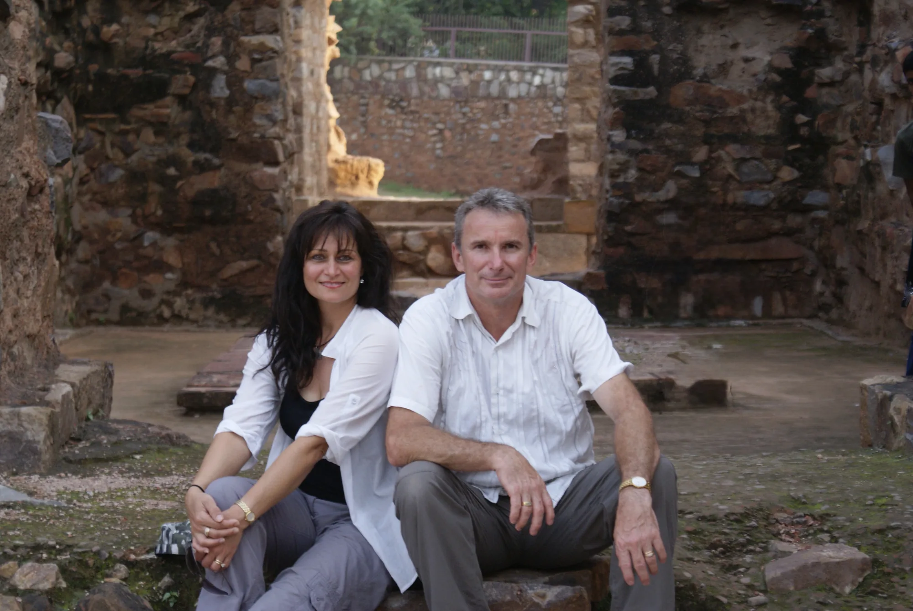

Cliff & Susan Peiffer, Terranora, NSW
1571 · 2026In 2010, Cliff and Susan Peiffer stood beneath the red sandstone arches of Jodha Bai’s palace in India and had an idea: build it again.
Seven years later, that idea had become Jodha Bai Estate, built by hand on a hillside in Terranora.
This is where the story began.
Cliff met Susan in 1984 and quickly knew he had found the person he wanted to share his life with. They married, raised four children, Wade, Amber, Brad and Brandy, and built a life shaped by family, travel, adventure and business. Their journey took them overseas, including years living and working throughout South-East Asia, before they returned to Australia and continued building businesses together. They learned early that life was rarely predictable. There were new places to discover, businesses to build, challenges to overcome and, most importantly, a family to raise. Through every chapter, they kept moving forward together. They had no idea that one of their biggest adventures was still to come.
“Three to six months. That was the prognosis. He was 47 years old.”
At 47, Cliff was diagnosed with amyloidosis, an extremely rare and serious illness. Doctors gave him just three to six months to live. He refused to accept that this was how his story would end. With Susan, their children and an exceptional medical team beside him, Cliff faced the years ahead with determination and an unwavering belief that there was still more life to live. What followed was not the ending they had been given. It became the beginning of something neither of them could have imagined, a journey that would eventually take them to India, to a palace, and to a decision that would change everything.
Fatehpur Sikri was founded in 1571 as the capital of the Mughal Empire under Emperor Akbar. At the heart of the city was a palace built for Jodha Bai, Akbar’s Hindu wife, a woman whose place in the story of Fatehpur Sikri has endured for centuries. It was the architecture that first captured Cliff and Susan’s imagination, the red sandstone, the carved columns, the arches and the incredible attention to detail. They had travelled to India expecting to see something remarkable. They left with an idea. And that idea would eventually bring a piece of Fatehpur Sikri to a hillside in Terranora.
In 2010, the family travelled to Fatehpur Sikri for the first time. Walking into the palace courtyard, they were struck by the scale, detail and craftsmanship of the architecture. Cliff placed his hand against one of the enormous sandstone columns and looked at Susan: I could build this. She looked at him and said, go on then. That was it. What began as a thought in the courtyard of a palace in India became a seven-year project back home in Terranora, recreating the architecture they had fallen in love with, by hand and piece by piece. The idea had been simple. Building it was anything but.

Cliff and Susan began by designing the home and its surrounding buildings themselves. They then brought in their designer and draftsman, Richard, who became a close friend throughout the process. Five years of planning and design followed, along with two more trips to India to study the architecture and details they were determined to recreate. Construction finally began in 2015. Working as owner-builders, with no developer and no shortcuts, they built the Estate piece by piece, shaping the sandstone, raising the columns and bringing each detail to life. Seven years later, the build was complete. What began as an idea in India had become a home in Terranora, built to be passed down through generations.

After years in remission, Cliff’s amyloidosis returned aggressively in 2020. He was also diagnosed with multiple myeloma. Once again, he faced an uncertain future with the same determination that had carried him through the years before. With exceptional medical care and immunotherapy, he fought his way back into remission. In 2024, another challenge followed with an early-stage Parkinson’s diagnosis. Through it all, Cliff kept moving forward. The same determination that carried him through his illness was the determination that helped build Jodha Bai Estate, one day, one decision and one challenge at a time. The words tattooed on Cliff’s arm, written in Hindi, probably say more about Cliff than anything else could.
“You can’t kill this Motherf*cker.”
Crude? Yes. But after everything Cliff has faced, survived and continued to overcome, it’s hard to argue with the message. It has become a fitting reminder of the man behind Jodha Bai Estate, stubborn, determined and seemingly impossible to keep down.
Cliff and Susan built Jodha Bai Estate as a home for their family, but over the years, it has become something much bigger. A place shaped by love, determination, craftsmanship and more than a few impossible ideas. Today, they look forward to sharing it with their family, friends and the people who walk through its gates, while knowing that what they created will live on long after them. A home built to be lived in. A place built to be remembered. A legacy built to be passed on.
Cliff & Susan Peiffer
Owners of Jodha Bai Estate
Jodha Bai Estate, located in Terranora, Northern Rivers region of New South Wales, Australia

“We didn’t set out to build an estate. We set out to build a home for our family, something that would outlast us and carry our story forward.”Cliff & Susan Peiffer, Owners of Jodha Bai Estate